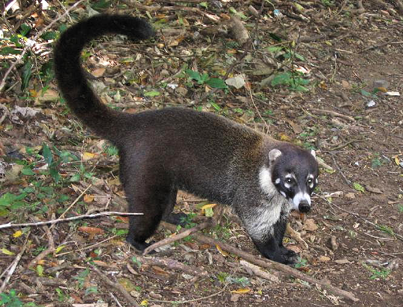
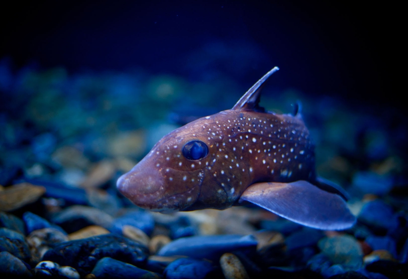

Quati
Nasua
| Reino: | Animalia |
| Classe: | Mammalia |
O quati é um mamífero da ordem Carnivora, da família Procyonidae e
do gênero Nasua. O grupo está distribuído desde o Arizona até o norte da
Argentina, possuindo três espécies: Nasua nasua, Nasua narica e Nasua nelsoni.
Este animal também é conhecido por seu nome popular "Tamanduá Palito". vive em bando.
Mamífero aparentado do guaxinim, possuindo entretanto um nariz mais comprido e um
corpo mais alongado. Com patas que lembram remotamente as dos ursos, muito úteis para escaladas em árvores.
É cinzento-amarelado, porém muito variável, havendo indivíduos quase pretos e outros bastante avermelhados,
focinho e pés pretos, cauda com 55 centímetros, com sete a oito anéis pretos. Mede, de corpo, setenta
centímetros. Vive em bandos de 4 a 20 indivíduos, é praticamente onívoro e se adapta bem ao cativeiro. São
animais diurnos, mas ás vezes o macho faz atividades noturnas.
Há três espécies desse pequeno animal, encontrado desde o Panamá (América Central)
até a Argentina. Quatis vivem em grandes bandos formados de fêmeas e machos jovens. Com mais de dois anos,
os machos já vivem sozinhos, juntando-se ao bando somente na época do acasalamento, que acontece no fim da
primavera. Dez ou onze semanas após, a fêmea produz de dois a seis filhotes. Por mais de um mês, estes
permanecem em seu ninho no oco de uma árvore. O quati alimenta-se de minhocas, insetos e frutas. Aprecia
também ovos, legumes e especialmente lagartos. Não gosta de água mas pode nadar bem. Dorme no alto das
árvores enrolado como uma bola e não desce antes do amanhecer.
Quimera
Chimaeriformes
| Reino: | Animalia |
| Classe: | Chondrichthyes |
Chimaeriformes é uma ordem da subclasse Holocephali peixes
cartilaginosos da classe Chondrichthyes, que inclui as espécies conhecidas pelo nome comum de
quimeras (por vezes tubarões-fantasma). O grupo constitui a única ordem da subclasse
monotípica Holocephali (do grego holo, todo + cephalo, cabeça). O táxon, que apresenta uma
relação filogenética próxima com os tubarões e as raias, agrupa cerca de 39 espécies extantes (viventes),
todas marinhas, sendo que a maioria vive nas regiões profundas dos oceanos, onde são raramente
observadas.
Este grupo de peixes de média dimensão (com adultos que chegam a atingir 1,5 m de
comprimento total) pertencem a um táxon que tempos foi grupo "diversa e abundante" (baseado no registo
fóssil), sendo que os seus parentes vivos mais próximos são os tubarões, embora o seu último ancestral comum
com os tubarões tenha vivido há cerca de 400 milhões de anos atrás. No presente o grupo está
maioritariamente confinado às águas marinhas profundas, sendo que muitas espécies têm como habitat a região
abissal dos oceanos.
Os membros deste agrupamento taxonómico medem em geral menos de um metro de
comprimento corporal e são encontrados maioritariamente nas águas profundas dos mares temperados do
hemisfério norte, chegando aos 2600 m de profundidade, com poucas espécies ocorrendo em profundidades
menores do que 200 m. As excepções incluem as espécies do género Callorhinchus e os peixes
conhecidas por peixe-coelho (Chimaera monstrosa) e ratão-manchado (Hydrolagus
colliei), que localmente podem ser encontradas em águas relativamente pouco profundas.
Consequentemente, estes também estão entre as poucas espécies da ordem Chimaeriformes que podem ser mantidas
em aquários públicos.